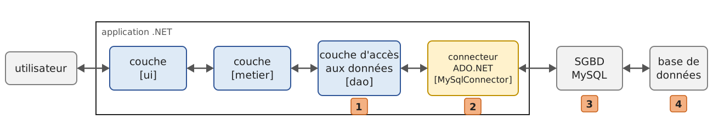
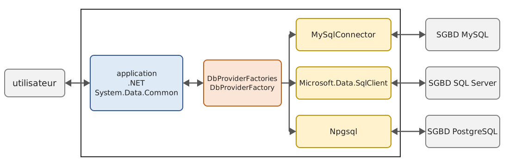
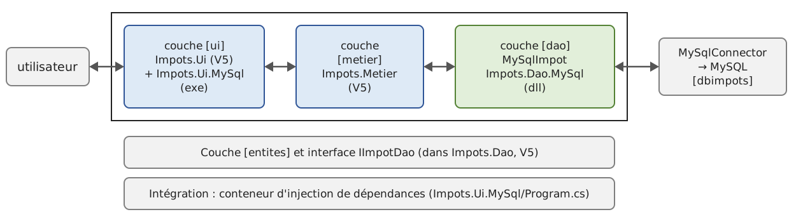

10. L'accès aux bases de données avec ADO.NET
10.1. Le connecteur ADO.NET
Reprenons l'architecture en couches utilisée à diverses reprises depuis le chapitre 6. Jusqu'à présent, la couche [dao] de l'application [Impots] a exploité trois types de sources de données :
- des données placées « en dur » dans le code ([HardwiredImpot]) ;
- des données provenant d'un fichier texte ([FileImpot]) ;
- des données provenant d'un fichier JSON ([JsonImpot]).
Nous étudions dans ce chapitre le cas où les données proviennent d'une base de données. L'architecture devient la suivante :

Dans le schéma ci-dessus, la couche [dao] [1] dialogue avec le SGBD (Système de Gestion de Bases de Données) [3], qui gère la base de données [4], au travers d'une bibliothèque de classes propre au SGBD utilisé [2]. Cette bibliothèque implémente des fonctionnalités standard réunies sous le nom d'ADO.NET (ADO pour « ActiveX Data Objects », le nom de la technologie d'accès aux données qui l'a précédée sous Windows). On l'appelle un fournisseur d'accès (« data provider ») ou encore un connecteur. Tous les SGBD courants disposent d'un connecteur ADO.NET.
Les classes d'un connecteur portent le nom du SGBD : [MySqlConnection] pour MySQL, [SqlConnection] pour SQL Server, [NpgsqlConnection] pour PostgreSQL… Si la couche [dao] utilise ces classes, elle a dans son code le nom du connecteur, et changer de SGBD oblige à la modifier. C'est à la fois une architecture performante, parce qu'un connecteur écrit pour un SGBD particulier sait utiliser au mieux celui-ci, et rigide, parce que changer de SGBD implique de changer la couche [dao]. Ce second argument est à relativiser : les entreprises ne changent pas de SGBD très souvent. Par ailleurs, nous verrons qu'ADO.NET propose depuis .NET 2.0 un « connecteur générique » qui apporte de la souplesse sans sacrifier les performances.
Le cours de 2008 utilisait successivement les SGBD SQL Server Compact (abandonné par Microsoft depuis), SQL Server 2005 Express, MySQL 5, puis des pilotes ODBC et OLE DB, avec des bases créées dans les assistants de Visual Studio. Nous utilisons ici un seul SGBD, MySQL 8, que l'annexe installe avec Laragon, et l'un de ses connecteurs ADO.NET les plus utilisés aujourd'hui, MySqlConnector. Les bases sont créées par des scripts SQL exécutés avec le client en ligne de commande [mysql] ; l'annexe montre aussi comment les créer avec le client graphique HeidiSQL livré avec Laragon.
10.2. Les deux modes d'exploitation d'une source de données
ADO.NET permet d'exploiter une source de données de deux manières différentes :
- le mode connecté ;
- le mode déconnecté.
En mode connecté, l'application :
- ouvre une connexion avec la source de données ;
- travaille avec la source de données en lecture / écriture ;
- ferme la connexion.
En mode déconnecté, l'application :
- ouvre une connexion avec la source de données ;
- obtient une copie en mémoire de tout ou partie des données de la source ;
- ferme la connexion ;
- travaille avec la copie en mémoire des données, en lecture / écriture ;
- lorsque le travail est fini, ouvre une connexion, envoie les données modifiées à la source de données pour qu'elle les prenne en compte, et ferme la connexion.
Le mode déconnecté reposait sur les classes [DataSet] (une petite base de données en mémoire, avec ses tables [DataTable], ses lignes [DataRow] et ses relations) et [DataAdapter] (le pont entre un [DataSet] et la base). Ces classes existent toujours dans .NET 10, mais elles ne sont plus guère utilisées dans les applications nouvelles : le travail sur une copie en mémoire des données, avec enregistrement ultérieur des modifications, est aujourd'hui confié à un ORM (« Object-Relational Mapper »), qui manipule des objets C# ordinaires plutôt que des lignes de tables. L'ORM de .NET, Entity Framework Core, est l'objet du chapitre 11. Comme le cours de 2008, nous n'étudions ici que le mode connecté, sur lequel repose d'ailleurs Entity Framework Core.
10.3. Les concepts de base de l'exploitation d'une base de données
10.3.1. La base de données exemple
Nous allons exposer les principaux concepts de l'utilisation d'une base de données avec une base MySQL nommée [dbarticles]. Elle contient une seule table, [articles], dont chaque ligne décrit un article d'un magasin :
- [ID] : un identifiant unique de l'article, clé primaire de la table ;
- [NOM] : le nom de l'article, unique lui aussi ;
- [PRIX] : son prix ;
- [STOCKACTUEL] : son stock actuel ;
- [STOCKMINIMUM] : le stock minimum en deçà duquel il faut réapprovisionner l'article.
La base est créée par le script SQL [sql/dbarticles.sql] suivant :
- ligne 5 : le script est un fichier texte codé en UTF-8. [SET NAMES utf8mb4] l'indique au serveur, sans quoi les caractères accentués des lignes 31-36 pourraient être mal interprétés par le client [mysql] ;
- lignes 8-9 : la base est supprimée si elle existe, puis recréée. Le script peut ainsi être exécuté plusieurs fois pour remettre la base dans son état initial. [utf8mb4] est le codage Unicode complet de MySQL (le codage historique [utf8] de MySQL ne code que les caractères sur trois octets au plus) ;
- ligne 12 : [dbarticles] devient la base courante : les ordres SQL qui suivent s'exécuteront sur elle ;
- lignes 15-26 : la définition de la table [articles] :
- ligne 16 : la colonne [ID] est la clé primaire de la table ([PRIMARY KEY]). L'attribut [AUTO_INCREMENT], propre à MySQL, indique que sa valeur est générée par le SGBD lui-même lors de l'insertion d'une ligne : 1, 2, 3… Les autres SGBD ont des notions équivalentes, avec une autre syntaxe ([IDENTITY] pour SQL Server, [GENERATED … AS IDENTITY] pour PostgreSQL) ;
- ligne 18 : le prix est un nombre décimal exact de 10 chiffres dont 2 après la virgule. Le script de 2008 utilisait le type [DOUBLE PRECISION], un nombre à virgule flottante, qui ne convient pas pour des montants (cf. la différence entre [double] et [decimal] au chapitre 3). Le type SQL [DECIMAL] correspond au type C# [decimal] ;
- lignes 22-26 : des contraintes d'intégrité. [UNQ_NOM] interdit que deux articles aient le même nom ; les contraintes [CHECK] interdisent un nom vide, un prix négatif ou nul, un stock négatif. Le script de 2008 ajoutait déjà ces contraintes, mais MySQL 5 les ignorait silencieusement ; MySQL les applique depuis la version 8.0.16 ;
- lignes 30-36 : l'insertion de six lignes. La colonne [ID] n'est pas initialisée : c'est le SGBD qui lui donne une valeur.
On exécute le script avec le client en ligne de commande [mysql], dans le dossier [sql] (l'utilisateur [root] de MySQL n'a pas de mot de passe dans l'installation de l'annexe ; sinon on ajoute l'option [-p] et le client le demande) :
La commande n'affiche rien si tout se passe bien. On peut vérifier la structure et le contenu de la table avec le même client :
- ligne 1 : l'option [-t] demande un affichage en tableau, l'option [-e] donne les ordres SQL à exécuter, et l'option [--default-character-set=utf8mb4] fait afficher correctement les caractères accentués dans un terminal UTF-8 ;
- lignes 3-9 : la structure de la table, obtenue par l'ordre MySQL [describe] ;
- lignes 12-19 : le contenu de la table. Les valeurs de la colonne [ID] ont été générées par le SGBD.
Une remarque sur la casse des noms : les noms de colonnes ne distinguent jamais majuscules et minuscules ([nom] et [NOM] désignent la même colonne), mais les noms de tables sont des noms de fichiers du serveur. Ils ne distinguent pas majuscules et minuscules sous Windows et les distinguent sous Linux. Pour que les exemples fonctionnent partout, la table s'appelle [articles], en minuscules, et les requêtes l'écrivent ainsi.
Maintenant que nous avons une base de données, nous allons pouvoir l'exploiter. Auparavant, faisons quelques rappels de SQL.
10.3.2. Les quatre commandes de base du langage SQL
SQL (« Structured Query Language ») est un langage, partiellement normalisé, d'interrogation et de mise à jour des bases de données. Tous les SGBD respectent la partie normalisée de SQL mais ajoutent au langage des extensions propriétaires qui exploitent leurs particularités. Nous en avons déjà rencontré deux exemples : la génération automatique des clés primaires et les types autorisés pour les colonnes d'une table dépendent souvent du SGBD.
Les quatre commandes de base du langage SQL que nous présentons sont normalisées et acceptées par tous les SGBD :
Commande | Rôle |
[select col1, col2, … from table1, table2, … where condition order by expression] | La requête qui permet d'obtenir les données contenues dans une base. Seuls les mots clés [select] et [from] sont obligatoires. Une jointure est faite avec toutes les tables qui suivent le mot clé [from] ; seules les colonnes qui suivent le mot clé [select] sont conservées ; seules les lignes vérifiant la condition du mot clé [where] sont conservées ; les lignes résultantes, ordonnées selon l'expression du mot clé [order by], forment le résultat de la requête. Ce résultat est une table. |
[insert into table(col1, col2, …) values (val1, val2, …)] | Insère une ligne dans [table]. [(col1, col2, …)] précise les colonnes de la ligne à initialiser avec les valeurs [(val1, val2, …)]. |
[update table set col1=val1, col2=val2, … where condition] | Met à jour les lignes de [table] vérifiant [condition] (toutes les lignes s'il n'y a pas de [where]). Pour ces lignes, la colonne [coli] reçoit la valeur [vali]. |
[delete from table where condition] | Supprime toutes les lignes de [table] vérifiant [condition] (toutes les lignes s'il n'y a pas de [where]). |
Nous allons écrire une application console permettant d'émettre des ordres SQL sur la base [dbarticles]. Voici un exemple d'exécution. Le lecteur est invité à comprendre les ordres SQL émis et leurs résultats :
- ligne 2 : la chaîne dite de connexion : elle contient tous les paramètres permettant de se connecter à la base de données ;
- ligne 4 : on demande le contenu de la table [articles]. Les prix sont affichés avec une virgule décimale : le programme s'exécute en culture française ;
- ligne 17 : on insère une nouvelle ligne. On notera que la colonne [id] n'est pas initialisée dans cette opération car c'est le SGBD qui va générer sa valeur ;
- ligne 20 : vérification. Ligne 32, la ligne a bien été ajoutée, avec l'[id] 7. Avec [select *], les noms des colonnes sont ceux de la table, en majuscules ;
- ligne 34 : on augmente de 10 % le prix de l'article qui vient d'être ajouté ;
- ligne 43 : l'augmentation du prix a bien eu lieu ;
- ligne 45 : on supprime l'article ajouté précédemment ;
- ligne 48 : on vérifie qu'il ne reste plus que six articles ;
- ligne 56 : le programme n'accepte que les quatre ordres [select], [insert], [update] et [delete] ;
- ligne 60 : une erreur signalée par le SGBD : la table [article] n'existe pas ;
- ligne 63 : la contrainte d'unicité [UNQ_NOM] interdit d'ajouter un second article [vélo]. Les messages d'erreur de MySQL, comme ceux de .NET, sont en anglais.
10.3.3. Les classes de base d'ADO.NET pour le mode connecté
Revenons au schéma d'une application exploitant une base de données au travers d'un connecteur ADO.NET :
En mode connecté, l'application :
- ouvre une connexion avec la source de données ;
- travaille avec la source de données en lecture / écriture ;
- ferme la connexion.
Trois types d'objets sont principalement concernés par ces opérations :
- la connexion, qui encapsule les propriétés et méthodes de la liaison avec la base ;
- la commande, qui encapsule les propriétés et méthodes de l'ordre SQL exécuté ;
- le lecteur (« data reader »), qui encapsule les propriétés et méthodes du résultat d'un ordre SQL [select].
Chaque connecteur définit ses propres classes ([MySqlConnection], [MySqlCommand], [MySqlDataReader] pour MySqlConnector), qui dérivent de classes abstraites communes à tous les connecteurs, définies dans l'espace de noms [System.Data.Common] : [DbConnection], [DbCommand], [DbDataReader]. Le cours de 2008 présentait les interfaces [IDbConnection], [IDbCommand], [IDataReader] de l'espace de noms [System.Data], que ces classes implémentent. On préfère aujourd'hui les classes abstraites : elles sont plus riches que les interfaces, auxquelles on ne pouvait plus ajouter de méthodes sans casser les connecteurs existants (les méthodes d'interface par défaut n'existaient pas encore). Les versions asynchrones des méthodes ([OpenAsync], [ExecuteReaderAsync], [ReadAsync]…), par exemple, n'existent que dans les classes abstraites.
10.3.3.1. La classe DbConnection
Elle sert à gérer la connexion avec la base de données. Les méthodes M et propriétés P de cette classe que nous utiliserons sont les suivantes :
Nom | Type | Rôle |
[ConnectionString] | P | chaîne de connexion à la base. Elle précise tous les paramètres nécessaires à l'établissement de la connexion avec une base précise. |
[Open] | M | ouvre la connexion avec la base définie par [ConnectionString]. |
[Close] | M | ferme la connexion. [Dispose] la ferme aussi. |
[BeginTransaction] | M | démarre une transaction. |
[CreateCommand] | M | crée une commande associée à cette connexion. |
[State] | P | état de la connexion : [ConnectionState.Closed], [ConnectionState.Open], [ConnectionState.Connecting], [ConnectionState.Executing], [ConnectionState.Fetching], [ConnectionState.Broken]. |
Avec MySqlConnector, l'ouverture d'une connexion peut se faire comme suit :
ou, plus simplement, en passant la chaîne de connexion au constructeur :
10.3.3.2. La classe DbCommand
Elle sert à exécuter un ordre SQL ou une procédure stockée. Les méthodes M et propriétés P de cette classe que nous utiliserons sont les suivantes :
Nom | Type | Rôle |
[CommandType] | P | indique ce qu'il faut exécuter. Elle prend ses valeurs dans l'énumération [CommandType] : [CommandType.Text] exécute l'ordre SQL défini dans la propriété [CommandText] (c'est la valeur par défaut) ; [CommandType.StoredProcedure] exécute une procédure stockée dans la base. |
[CommandText] | P | le texte de l'ordre SQL à exécuter si [CommandType] vaut [CommandType.Text], le nom de la procédure stockée à exécuter si [CommandType] vaut [CommandType.StoredProcedure]. |
[Connection] | P | la connexion [DbConnection] à utiliser pour exécuter l'ordre SQL. |
[Transaction] | P | la transaction [DbTransaction] dans laquelle exécuter l'ordre SQL. |
[Parameters] | P | la liste des paramètres d'un ordre SQL paramétré. L'ordre [update articles set prix=prix*1.1 where id=@id] a le paramètre [@id]. |
[ExecuteReader] | M | exécute un ordre SQL [select]. On obtient un objet [DbDataReader] représentant le résultat du [select]. |
[ExecuteNonQuery] | M | exécute un ordre SQL [update], [insert], [delete]. On obtient le nombre de lignes affectées par l'opération (mises à jour, insérées, supprimées). |
[ExecuteScalar] | M | exécute un ordre SQL [select] ne rendant qu'un unique résultat, comme [select count(*) from articles]. |
[CreateParameter] | M | crée un paramètre [DbParameter] d'un ordre SQL paramétré. |
[Prepare] | M | permet d'optimiser l'exécution d'une requête paramétrée lorsqu'elle est exécutée de multiples fois avec des paramètres différents. |
L'exécution d'un ordre SQL sans transaction a la forme suivante :
10.3.3.3. La classe DbDataReader
Elle encapsule les résultats d'un ordre SQL [select]. Un objet [DbDataReader] représente une table avec des lignes et des colonnes, que l'on exploite séquentiellement : d'abord la première ligne, puis la deuxième, etc., sans retour en arrière possible. Les lignes ne sont pas toutes chargées en mémoire : le lecteur les reçoit du serveur au fur et à mesure de leur lecture. Les méthodes M et propriétés P de cette classe que nous utiliserons sont les suivantes :
Nom | Type | Rôle |
[FieldCount] | P | le nombre de colonnes de la table résultat. |
[GetName] | M | [GetName(i)] rend le nom de la colonne n° i de la table résultat (les colonnes sont numérotées à partir de 0). |
[GetOrdinal] | M | [GetOrdinal(nom)] rend le numéro de la colonne de nom [nom]. |
[Item] | P | l'indexeur [reader[i]] représente la colonne n° i de la ligne courante, [reader["nom"]] la colonne de nom [nom], sous la forme d'un [object]. |
[Read] | M | passe à la ligne suivante de la table résultat. Rend [true] si la lecture a pu se faire, [false] s'il n'y a plus de ligne. |
[Close] | M | ferme le lecteur. [Dispose] le ferme aussi. |
[GetInt32] | M | [GetInt32(i)] rend la valeur entière de la colonne n° i de la ligne courante. Les autres méthodes analogues sont [GetBoolean], [GetDateTime], [GetDecimal], [GetDouble], [GetFloat], [GetInt16], [GetInt64], [GetString]… |
[GetValue] | M | [GetValue(i)] rend la valeur de la colonne n° i de la ligne courante en tant que type [object]. |
[IsDBNull] | M | [IsDBNull(i)] rend [true] si la colonne n° i de la ligne courante n'a pas de valeur, ce qui est symbolisé par la valeur SQL [NULL]. La valeur correspondante en C# est [DBNull.Value]. |
L'exploitation d'un objet [DbDataReader] ressemble souvent à ce qui suit :
10.3.4. La gestion des erreurs
La couche [dao] peut rencontrer de nombreuses erreurs lors de l'exploitation de la base de données : serveur arrêté, base inexistante, mot de passe incorrect, erreur de syntaxe SQL, violation d'une contrainte d'intégrité… Celles-ci sont remontées sous la forme d'exceptions lancées par le connecteur ADO.NET. Le code de la couche [dao] doit les gérer et, quoi qu'il arrive, libérer les ressources qu'il a obtenues : la connexion et le lecteur doivent être fermés. Le code vu plus haut pour exploiter le résultat d'un ordre [select] devient le suivant :
La fermeture de la connexion et celle du lecteur peuvent être automatisées par l'instruction [using] : la connexion, la commande et le lecteur implémentent l'interface [IDisposable], et leur méthode [Dispose] les ferme. Depuis C# 8, la déclaration [using] (sans bloc) libère la ressource à la fin du bloc qui contient la déclaration :
- ligne 4 : la déclaration [using] garantit que la connexion sera fermée à la sortie du bloc [try], que l'on en sorte normalement ou par une exception. On économise une clause [finally], mais l'intérêt n'est pas dans cette économie mineure : la déclaration [using] évite au développeur de fermer lui-même la connexion. Or l'oubli de la fermeture d'une connexion peut passer inaperçu et « planter » l'application d'une façon qui paraîtra aléatoire, chaque fois que le SGBD atteindra le nombre maximal de connexions ouvertes qu'il peut supporter ;
- ligne 7 : on procède de même pour le lecteur. Les ressources sont libérées dans l'ordre inverse de leur déclaration : le lecteur, puis la commande, puis la connexion.
Les exceptions lancées par les connecteurs dérivent toutes de la classe abstraite [DbException] (espace de noms [System.Data.Common]). Chaque connecteur a sa propre classe dérivée, [MySqlException] pour MySqlConnector, qui donne des informations supplémentaires sur l'erreur : son numéro MySQL ([Number]), le même numéro sous la forme d'une énumération ([ErrorCode], de type [MySqlErrorCode]) et le code d'erreur normalisé SQL ([SqlState]). Le programme [adonet-02.cs] provoque diverses erreurs et les affiche :
Résultats :
- ligne 1 : la directive [#:package] d'une application fichier unique (chapitre 2) ajoute au programme le paquet NuGet [MySqlConnector], en version 2.4.0. Nous y revenons au paragraphe suivant ;
- ligne 8 : la chaîne de connexion à la base, écrite en tête du programme ;
- lignes 11-20 : six opérations qui échouent : base inexistante ; serveur injoignable (aucun serveur MySQL n'écoute sur le port 3399, ce qui produit la même erreur qu'un serveur arrêté) ; erreur de syntaxe ; table inexistante ; nom d'article en double ; prix négatif ;
- ligne 23 : la méthode [Executer] est une fonction locale (C# 7) du programme principal. Le mot clé [static] (C# 8) lui interdit d'utiliser les variables locales du programme principal : elle ne travaille qu'avec ses paramètres (et les constantes) ;
- ligne 34 : un filtre d'exception (C# 6) permet de traiter à part une erreur précise, ici la violation d'une contrainte d'unicité (erreur MySQL n° 1062). Une application afficherait dans ce cas un message compréhensible par l'utilisateur ;
- ligne 39 : les autres erreurs MySQL. Les résultats montrent leur numéro et leur code : [UnknownDatabase] (1049), [UnableToConnectToHost] (1042), [ParseError] (1064), [NoSuchTable] (1146). La violation d'une contrainte [CHECK] (erreur 3819, ligne 17) n'a pas de nom dans l'énumération [MySqlErrorCode] de MySqlConnector 2.4.0 : c'est le numéro qui est affiché ;
- ligne 45 : la clause qui intercepterait l'exception de n'importe quel connecteur. Elle ne sert à rien ici, mais c'est elle qu'utiliserait une couche [dao] écrite indépendamment du connecteur. On notera l'ordre des clauses [catch] : de la plus spécifique ([MySqlException]) à la plus générale ([DbException]).
10.3.5. Configuration du projet exemple
Le connecteur MySqlConnector est un paquet NuGet. Dans une application fichier unique, on l'ajoute par la directive :
Dans un projet, on l'ajoute avec la commande [dotnet add package], tapée dans le dossier du projet :
qui inscrit la référence au paquet dans le fichier [.csproj] :
Il existe deux connecteurs ADO.NET pour MySQL :
- [MySql.Data] (« Connector/NET »), publié par Oracle, propriétaire de MySQL. C'est le connecteur qu'utilisait le cours de 2008, dans sa version 5.2 ;
- [MySqlConnector], un connecteur libre (licence MIT) écrit indépendamment d'Oracle. Il est entièrement asynchrone (ses méthodes [XxxAsync] le sont réellement, alors que celles de [MySql.Data] ont longtemps été des méthodes synchrones déguisées), plus rapide, et il fonctionne avec MySQL et MariaDB. C'est lui qu'utilise [Pomelo.EntityFrameworkCore.MySql], le fournisseur MySQL d'Entity Framework Core que nous utiliserons au chapitre 11.
Les classes des deux connecteurs portent les mêmes noms ([MySqlConnection], [MySqlCommand]…), mais dans des espaces de noms différents : [MySqlConnector] pour le premier, [MySql.Data.MySqlClient] pour le second.
La chaîne de connexion ne doit pas être écrite dans le code d'une application réelle : elle dépend de la machine sur laquelle l'application est installée. Le cours de 2008 la plaçait dans la section [connectionStrings] du fichier XML [App.config], lue avec la classe [ConfigurationManager]. Le fichier de configuration des applications .NET actuelles est le fichier JSON [appsettings.json], déjà utilisé au chapitre 6, qui a lui aussi une section dédiée aux chaînes de connexion, [ConnectionStrings]. Le premier programme du chapitre utilise le fichier [appsettings.json] suivant, placé dans le dossier [10-adonet] :
- ligne 2 : la section des chaînes de connexion. Elle peut en contenir plusieurs, chacune désignée par un nom ;
- ligne 3 : la chaîne de connexion nommée [dbarticles]. Une chaîne de connexion a la forme « paramètre1=valeur1;paramètre2=valeur2;… ». Ses paramètres dépendent du connecteur ; ceux de MySqlConnector sont les suivants :
- [Server] : le nom de la machine sur laquelle se trouve le SGBD MySQL, ici [localhost], c'est-à-dire la machine sur laquelle s'exécute le programme ;
- [Port] : le port sur lequel le serveur MySQL attend les connexions, 3306 par défaut ;
- [Database] : le nom de la base de données, ici [dbarticles] ;
- [User] (ou [Uid]) : l'utilisateur MySQL, ici [root], l'administrateur du SGBD ;
- [Password] (ou [Pwd]) : son mot de passe, vide ici.
Le site connectionstrings.com donne la forme des chaînes de connexion des principaux SGBD, et la documentation de MySqlConnector la liste complète de ses paramètres : MySqlConnector Connection Options.
Les autres programmes du chapitre, plus courts, écrivent leur chaîne de connexion dans une constante en tête du programme, comme [adonet-02.cs] : c'est plus simple pour des exemples, à ne pas faire dans une application.
10.3.6. Le programme exemple
Le programme [adonet-01.cs] dont nous avons vu un exemple d'exécution est le suivant (programme principal) :
- lignes 1-2 : les deux paquets utilisés : le connecteur MySQL et la lecture d'un fichier de configuration JSON ;
- ligne 10 : l'espace de noms des classes du connecteur. On a là une dépendance envers un espace de noms propre à un connecteur : le programme devra être modifié si on change de SGBD ;
- lignes 16-19 : la lecture du fichier [appsettings.json], comme au chapitre 6. Le fichier est cherché dans le dossier courant ([Directory.GetCurrentDirectory]), celui à partir duquel on lance [dotnet run adonet-01.cs]. Une application fichier unique est en effet compilée dans un dossier temporaire, loin du fichier source : [AppContext.BaseDirectory] ne désignerait pas le dossier [10-adonet] ;
- ligne 20 : [GetConnectionString(nom)] est un raccourci pour [config["ConnectionStrings:nom"]]. Elle rend [null] si la chaîne n'existe pas, cas traité lignes 27-29 ;
- ligne 37 : les quatre ordres SQL acceptés, dans un ensemble [HashSet] (chapitre 5), initialisé par une expression de collection (C# 12). Le cours de 2008 utilisait un dictionnaire dont les valeurs ne servaient à rien ;
- ligne 40 : la boucle de saisie des ordres SQL tapés au clavier et de leur exécution sur la base de données ;
- ligne 51 : le premier mot de la requête, obtenu avec une expression régulière (chapitre 5) : [\S+] désigne une suite de caractères qui ne sont pas des espaces. Il est mis en minuscules pour la comparaison, mais la requête elle-même n'est pas modifiée : le programme de 2008 mettait toute la requête en minuscules, ce qui empêchait d'insérer un article nommé « Vélo » ;
- lignes 52-55 : si la requête est invalide, un message d'erreur est affiché et on passe à la requête suivante ;
- lignes 58-64 : l'exécution de l'ordre SQL saisi. Elle prend une forme différente selon qu'il s'agit d'un ordre [select] ou d'un ordre [insert], [update], [delete] : dans le premier cas, l'ordre ramène des données de la base sans la modifier ; dans le second, il met la base à jour sans ramener de données. Dans les deux cas, l'exécution est déléguée à une méthode qui reçoit la chaîne de connexion et l'ordre SQL à exécuter.
10.3.7. Exécution d'une requête SELECT
L'exécution d'ordres SQL comporte les étapes suivantes :
- connexion à la base de données ;
- émission des ordres SQL vers la base ;
- traitement des résultats des ordres SQL ;
- fermeture de la connexion.
Les étapes 2 et 3 peuvent être répétées, la fermeture de la connexion n'ayant lieu qu'à la fin de l'exploitation de la base. Les connexions ouvertes sont des ressources limitées d'un SGBD : il faut les économiser, et l'on cherche toujours à limiter la durée de vie d'une connexion ouverte. Dans notre programme, la connexion est fermée après chaque ordre SQL, et une nouvelle connexion est ouverte pour l'ordre suivant.
L'ouverture d'une connexion est pourtant coûteuse : il faut établir une connexion réseau avec le serveur, négocier éventuellement un chiffrement, s'authentifier. Pour diminuer ce coût, les connecteurs gèrent un pool de connexions : lorsque l'application ferme une connexion, le connecteur ne la ferme pas réellement mais la remet dans un réservoir (le pool) ; lorsque l'application ouvre une nouvelle connexion avec la même chaîne de connexion, elle reçoit l'une des connexions du pool, déjà établie. L'intérêt de ce système est qu'il est transparent pour le développeur : le programme n'a pas à être modifié pour l'utiliser. Le pool est activé par défaut dans MySqlConnector (comme dans les autres connecteurs actuels), et se configure par des paramètres de la chaîne de connexion ([Pooling], [MaximumPoolSize], [MinimumPoolSize]…). Ouvrir une connexion au début de chaque opération et la fermer à la fin, par un [using], est donc la bonne pratique.
Nous nous intéressons tout d'abord à l'exécution des ordres SQL [select]. La méthode [ExecuteSelect] de notre programme exemple et la méthode [AfficherReader] qu'elle utilise sont les suivantes :
- ligne 89 : la méthode reçoit deux paramètres :
- la chaîne de connexion [connectionString] qui va lui permettre de se connecter à la base ;
- l'ordre SQL [select] [requete] à exécuter sur cette connexion ;
- ligne 91 : toute opération avec une base de données peut lancer une exception. C'est d'autant plus probable ici que les ordres SQL donnés par l'utilisateur peuvent être syntaxiquement erronés. Il faut qu'on puisse le lui dire : tout le code est donc à l'intérieur d'un [try] / [catch] ;
- ligne 93 : plusieurs choses ici :
- la connexion avec la base est initialisée avec la chaîne de connexion [connectionString]. Elle n'est pas encore ouverte : elle le sera ligne 95 ;
- la déclaration [using] garantit la fermeture de la connexion (sa remise dans le pool) à la sortie du bloc [try] ;
- la connexion est d'un type propre au connecteur : [MySqlConnection] ;
- ligne 95 : la connexion est ouverte. C'est à ce moment que les paramètres de la chaîne de connexion sont utilisés, et que se produisent les erreurs de connexion ;
- ligne 97 : l'ordre SQL est confié à un objet [MySqlCommand], initialisé avec deux informations : l'ordre SQL à émettre et la connexion à utiliser. Le même type d'objet sert à exécuter un ordre [select] et un ordre [update], [insert], [delete] ;
- ligne 98 : l'ordre [select] est exécuté par la méthode [ExecuteReader] de la commande, qui rend un objet [MySqlDataReader], dérivé de [DbDataReader] ;
- ligne 100 : l'affichage des résultats est confié à la méthode [AfficherReader] ;
- ligne 102 : l'exception éventuelle est interceptée sous son type de base [DbException] ;
- ligne 109 : la méthode reçoit un objet [DbDataReader]. On notera qu'elle utilise la classe abstraite et non la classe [MySqlDataReader] du connecteur : elle conviendrait à n'importe quel connecteur ;
- lignes 112-119 : on affiche les noms des colonnes de la table résultat du [select]. Ce sont les colonnes [coli] de la requête [select col1, col2, … from table …]. [string.Join] les assemble en les séparant par des virgules, et le constructeur [new string('-', n)] produit une chaîne de n tirets ;
- lignes 121-128 : on parcourt la table résultat et on affiche les valeurs de chaque ligne ;
- ligne 126 : on ne connaît pas le type de la colonne n° i du résultat parce qu'on ne connaît pas la requête tapée par l'utilisateur. On ne peut donc pas utiliser la syntaxe [reader.GetXxx(i)], où [Xxx] est le type de la colonne. On utilise alors l'indexeur [reader[i]], qui rend la valeur sous la forme d'un [object] ; [StringBuilder.Append(object)] l'ajoute au moyen de sa méthode [ToString]. Pour la colonne [prix], de type SQL [DECIMAL], l'objet est un [decimal], affiché avec deux décimales et une virgule.
10.3.8. Exécution d'un ordre de mise à jour : INSERT, UPDATE, DELETE
Le code de la méthode [ExecuteUpdate] est le suivant :
L'exécution d'un ordre de mise à jour ne diffère de celle d'un ordre [select] que par la méthode de la commande utilisée : [ExecuteReader] pour [select], [ExecuteNonQuery] pour [update], [insert], [delete] :
- ligne 78 : l'ordre [update], [insert] ou [delete] est exécuté par la méthode [ExecuteNonQuery] de la commande. Si elle réussit, cette méthode rend le nombre de lignes mises à jour ([update]), insérées ([insert]) ou supprimées ([delete]) ;
- ligne 80 : ce nombre de lignes est affiché.
Le lecteur est invité à revoir l'exemple d'exécution donné au paragraphe « Les quatre commandes de base du langage SQL ».
10.4. Autres connecteurs ADO.NET
10.4.1. Les connecteurs actuels
Le code que nous avons étudié est propre à un connecteur : il utilise les classes de l'espace de noms [MySqlConnector]. Le cours de 2008 construisait ensuite le même programme avec les connecteurs de SQL Server Compact, de SQL Server 2005, de MySQL 5, puis avec des pilotes ODBC et OLE DB, pour montrer que seuls les noms des classes changeaient. Le constat reste vrai, et nous ne referons pas l'exercice, qui nécessiterait d'installer d'autres SGBD. Voici les principaux connecteurs ADO.NET d'aujourd'hui, tous distribués sous forme de paquets NuGet :
SGBD | Paquet NuGet | Connexion | Remarques |
MySQL, MariaDB | [MySqlConnector] | [MySqlConnection] | connecteur libre, utilisé dans ce cours |
MySQL | [MySql.Data] | [MySqlConnection] | le connecteur d'Oracle ; espace de noms [MySql.Data.MySqlClient] |
SQL Server, Azure SQL | [Microsoft.Data.SqlClient] | [SqlConnection] | remplace l'ancien [System.Data.SqlClient] du .NET Framework, utilisé en 2008 |
PostgreSQL | [Npgsql] | [NpgsqlConnection] | |
SQLite | [Microsoft.Data.Sqlite] | [SqliteConnection] | une base dans un fichier, sans serveur : l'héritière de SQL Server Compact pour les petites applications |
Oracle | [Oracle.ManagedDataAccess.Core] | [OracleConnection] | espace de noms [Oracle.ManagedDataAccess.Client] |
Sauf mention contraire, l'espace de noms des classes porte le nom du paquet.
Pour passer d'un SGBD à l'autre, on change de paquet, d'espace de noms ([using]), de préfixe des classes ([MySqlCommand] devient [SqlCommand], [NpgsqlCommand]…) et de chaîne de connexion ; le reste du code est identique.
Les pilotes ODBC (« Open DataBase Connectivity ») et OLE DB (« Object Linking and Embedding DataBase ») étaient en 2008 un moyen d'accéder avec un unique code, au prix de performances moindres, à tout SGBD disposant d'un tel pilote. Ce sont des technologies antérieures à .NET, propres à Windows pour OLE DB. Elles restent disponibles (paquets [System.Data.Odbc] et [System.Data.OleDb]) pour accéder à des sources de données qui n'ont pas de connecteur ADO.NET, mais on ne les choisit plus pour une application nouvelle : tous les SGBD courants ont leur connecteur ADO.NET, et c'est le connecteur générique décrit ci-dessous qui apporte l'indépendance vis-à-vis du SGBD.
10.4.2. Le connecteur générique
L'architecture utilisée est la suivante :

Le « connecteur générique » présente une interface standard aux applications qui l'utilisent sans sacrifier les performances, parce qu'il s'appuie sur les connecteurs propres aux SGBD. L'application n'utilise que les classes abstraites de [System.Data.Common] ([DbConnection], [DbCommand], [DbDataReader], [DbParameter]…). Les objets concrets sont créés par une fabrique (« factory ») fournie par le connecteur : une classe dérivée de [DbProviderFactory], dont les méthodes [CreateConnection], [CreateCommand], [CreateParameter]… rendent des objets du connecteur sous la forme des classes abstraites. Chaque connecteur a sa fabrique, accessible par sa propriété statique [Instance] : [MySqlConnectorFactory.Instance] pour MySqlConnector, [SqlClientFactory.Instance] pour SQL Server, [NpgsqlFactory.Instance] pour PostgreSQL.
La classe statique [DbProviderFactories] tient un registre des fabriques, chacune désignée par un nom dit invariant. Avec le .NET Framework, ce registre était rempli par les installations des connecteurs, dans le fichier de configuration de la machine, et le cours de 2008 affichait les six connecteurs installés sur la machine de l'auteur. Avec .NET, le registre est vide au démarrage : l'application y inscrit elle-même les connecteurs qu'elle accepte, avec la méthode [DbProviderFactories.RegisterFactory]. Le choix du connecteur peut ensuite être fait par configuration, par son nom invariant. C'est ce que fait le programme [adonet-03.cs], qui reçoit en argument le nom invariant du connecteur à utiliser :
Résultats avec le connecteur [MySqlConnector] (valeur par défaut) :
Résultats avec un connecteur non enregistré :
- ligne 10 : le nom invariant du connecteur, passé en argument, [MySqlConnector] par défaut ;
- ligne 14 : l'inscription de la fabrique de MySqlConnector dans le registre, sous le nom invariant [MySqlConnector]. C'est la seule ligne du programme qui nomme une classe du connecteur. Une application qui accepterait aussi SQL Server ajouterait la ligne [DbProviderFactories.RegisterFactory("Microsoft.Data.SqlClient", SqlClientFactory.Instance)] (et la référence au paquet [Microsoft.Data.SqlClient]) ;
- lignes 18-21 : [GetFactoryClasses] rend la liste des connecteurs enregistrés sous la forme d'une table en mémoire, un objet [DataTable] du mode déconnecté : ses lignes [DataRow] s'indexent par le nom de la colonne. La colonne [AssemblyQualifiedName] contient le nom complet de la classe de la fabrique ; on notera que la version de l'assemblage MySqlConnector est 2.0.0.0 : seule la version du paquet (2.4.0) change d'une mise à jour mineure à l'autre ;
- ligne 28 : on obtient la fabrique du connecteur désigné par son nom invariant. Si le nom n'a pas été enregistré, [GetFactory] lance une [ArgumentException] (ligne 4 des seconds résultats) ;
- lignes 40-42 : la connexion est créée par la fabrique, configurée avec la chaîne de connexion, puis ouverte. Les méthodes [CreateXxx] rendent un type nullable ([DbConnection?]) : une fabrique peut ne pas savoir créer certains objets. L'opérateur [!] indique au compilateur que nous savons que le résultat n'est pas [null] ;
- lignes 43-45 : la commande est créée de la même façon, puis reçoit sa connexion et son texte. On aurait pu écrire aussi [connexion.CreateCommand()] ;
- lignes 47-50 : la requête contient un paramètre, [@prix]. Les requêtes paramétrées sont étudiées au paragraphe suivant ; on retiendra ici que le paramètre est lui aussi créé par la fabrique ;
- ligne 52 : les résultats montrent que les objets manipulés au travers des classes abstraites sont des objets du connecteur MySqlConnector ([MySqlConnection], [MySqlCommand], [MySqlDataReader]) ;
- ligne 55 : le type des colonnes étant connu, on utilise les méthodes [GetInt32], [GetString], [GetDecimal] qui rendent directement une valeur du type attendu.
Depuis .NET 7, ADO.NET propose aussi la classe abstraite [DbDataSource], qui réunit une fabrique et une chaîne de connexion : [fabrique.CreateDataSource(connectionString)] rend une source de données dont la méthode [OpenConnection] rend une connexion ouverte. Nous l'utiliserons avec les méthodes asynchrones.
10.4.3. Quel connecteur choisir ?
Nous avons vu deux façons d'utiliser un connecteur ADO.NET :
- utiliser directement les classes du connecteur : la couche [dao] dépend du connecteur. Changer de SGBD implique de modifier la couche [dao] ;
- utiliser le connecteur générique : la couche [dao] ne connaît que les classes abstraites et le nom invariant du connecteur, qui peut être lu dans un fichier de configuration.
Il semble donc que le connecteur générique soit la solution idéale. Dans la pratique, il n'arrive pas à cacher toutes les particularités d'un SGBD :
- le SQL lui-même diffère d'un SGBD à l'autre dès qu'on sort des ordres de base : génération des clés primaires, limitation du nombre de lignes rendues ([limit 10] pour MySQL, [top 10] ou [offset … fetch] pour SQL Server), types des colonnes, fonctions de dates, etc. ;
- la syntaxe des paramètres des requêtes paramétrées varie : [@nom] pour SQL Server, MySQL et SQLite, mais [?] (des paramètres positionnels, sans nom) pour les pilotes ODBC et OLE DB et le connecteur MySQL de 2008, et [$1], [$2]… dans le SQL natif de PostgreSQL (Npgsql accepte aussi [@nom]). Avec des paramètres positionnels, c'est l'ordre d'ajout des paramètres à la collection [Parameters] qui compte ; avec des paramètres nommés, l'ordre n'a pas d'importance ;
- les exceptions, enfin, sont des [DbException] dont les codes d'erreur dépendent du SGBD.
Le cours de 2008 citait des frameworks qui s'affranchissent de ces limites : Spring.NET, iBatis.NET, NHibernate et LINQ to SQL. Spring.NET et iBatis.NET ne sont plus maintenus, LINQ to SQL n'évolue plus et n'existe pas dans .NET actuel ; NHibernate existe toujours. Aujourd'hui, on utilise principalement :
- Entity Framework Core, l'ORM de Microsoft, présenté au chapitre 11 : la couche [dao] manipule des objets C# et écrit ses requêtes en LINQ ; c'est EF Core qui génère le SQL propre à chaque SGBD ;
- Dapper, un « micro-ORM » qui ajoute aux connexions ADO.NET des méthodes d'extension transformant directement les lignes d'un [select] en objets C#. On continue à écrire le SQL, mais on n'écrit plus les boucles sur le lecteur.
Ces outils s'appuient tous sur les connecteurs ADO.NET : comprendre ADO.NET reste utile pour comprendre ce qu'ils font et diagnostiquer leurs problèmes.
10.5. Les requêtes paramétrées
10.5.1. Le principe
Une requête paramétrée est un ordre SQL dont certaines valeurs sont remplacées par des paramètres, dont les valeurs sont fournies séparément du texte de la requête. Le programme [adonet-04.cs] les met en œuvre : il vide la table [articles], y insère cinq articles avec une requête paramétrée, puis les relit avec une autre requête paramétrée :
Résultats :
- ligne 99 : un objet [Article] représente une ligne de la table [articles]. C'est un [record] (C# 9, chapitre 4) : une classe dont le constructeur principal définit les propriétés, avec une méthode [ToString] qui affiche ces propriétés (lignes 5-9) ; le cours de 2008 écrivait une classe de 25 lignes. Dans une application fichier unique, les types sont déclarés après les instructions de haut niveau ;
- lignes 10-13 : un tableau de cinq articles ;
- ligne 19 : on supprime tous les articles de la table. La méthode [ExecuteUpdate] rend cette fois le nombre de lignes supprimées ;
- ligne 34 : la méthode d'insertion d'un tableau d'articles :
- ligne 39 : la requête d'insertion d'un article. Elle a quatre paramètres : [@nom], [@prix], [@sa] (stock actuel) et [@sm] (stock minimum). Avec MySqlConnector, un paramètre est un nom précédé du caractère [@] ; le nom est libre ;
- lignes 42-45 : on déclare chacun des quatre paramètres et on l'ajoute à la liste des paramètres de la commande. La méthode [Parameters.Add(string nom, MySqlDbType type)] précise le nom du paramètre, qui doit être l'un de ceux de la requête, et le type SQL de la colonne concernée ; une troisième forme, [Add(nom, type, taille)], précise de plus la taille de la colonne, utile pour les chaînes de caractères ([VarChar]) ;
- ligne 47 : on « prépare » la requête paramétrée, c'est-à-dire qu'on la fait compiler par le SGBD. Cette opération n'est pas indispensable : elle améliore les performances. Lorsqu'un SGBD exécute un ordre SQL, il fait un travail d'analyse et d'optimisation avant de l'exécuter (il établit un « plan d'exécution »). Une requête paramétrée est destinée à être exécutée plusieurs fois avec des paramètres différents, mais son texte ne change pas : ce travail peut n'être fait qu'une fois. Une fois préparée, la requête est exécutée de façon répétée avec de nouvelles valeurs des paramètres mais le même plan d'exécution ;
- lignes 49-55 : les articles sont insérés un à un. Chacun des quatre paramètres reçoit sa valeur par sa propriété [Value], puis la requête, maintenant complète, est exécutée de la façon habituelle ;
- ligne 61 : la méthode qui rend les articles dont le nom correspond à un modèle [like] de SQL (le caractère [%] y désigne une suite quelconque de caractères : [%3] désigne les noms qui se terminent par 3) :
- ligne 68 : [AddWithValue(nom, valeur)] déclare le paramètre et lui donne sa valeur en une seule instruction. Le type SQL du paramètre est déduit du type C# de la valeur, ici [string]. C'est la forme la plus courante lorsque la requête n'est exécutée qu'une fois ;
- lignes 72-75 : chaque ligne du résultat devient un objet [Article]. Le type des colonnes est connu : on utilise les méthodes [GetXxx]. Elles acceptent le numéro de la colonne ou, avec MySqlConnector, son nom. Avec la classe abstraite [DbDataReader], le nom est accepté par des méthodes d'extension de même nom (classe [DataReaderExtensions], espace de noms [System.Data]), équivalentes à [reader.GetInt32(reader.GetOrdinal("stockactuel"))].
Les types SQL de MySqlConnector sont les valeurs de l'énumération [MySqlDbType]. Voici les plus courants et le type C# correspondant :
Type MySqlDbType | Type C# | Type de colonne MySQL |
[Int32] | [int] | [INT] |
[Int64] | [long] | [BIGINT] |
[Decimal] | [decimal] | [DECIMAL(p,d)] |
[Double] | [double] | [DOUBLE] |
[VarChar] | [string] | [VARCHAR(n)], chaîne de longueur variable |
[DateTime] | [DateTime] | [DATETIME] |
[Date] | [DateOnly] ou [DateTime] | [DATE] |
[Bool] | [bool] | [BOOL] (synonyme de [TINYINT(1)]) |
Les classes abstraites, elles, utilisent l'énumération [DbType] ([DbType.Int32], [DbType.String], [DbType.Decimal]…), commune à tous les connecteurs, par la propriété [DbParameter.DbType].
10.5.2. L'injection SQL
La préparation n'est pas l'unique avantage des requêtes paramétrées, ni le plus important. Reprenons la requête d'insertion. On pourrait vouloir construire son texte par programme, en y insérant les valeurs :
Si (nom, prix, sa, sm) vaut ("article1", 100, 10, 1), la requête devient :
Mais si le nom est « l'article1 », elle devient :
et elle est syntaxiquement incorrecte, à cause de l'apostrophe du nom. Il y a pire : si le nom provient d'une saisie de l'utilisateur, celui-ci peut taper un texte qui modifie le sens de la requête. C'est l'injection SQL, l'une des failles de sécurité les plus répandues et les plus graves des applications qui utilisent une base de données. Le programme [adonet-05.cs] la met en évidence sur une recherche d'article par son nom :
Résultats :
- ligne 9 : trois noms tels qu'un utilisateur pourrait les taper : un nom ordinaire, un nom qui contient une apostrophe, et un texte malveillant ;
- ligne 25 : la première méthode de recherche insère le nom dans le texte de la requête :
- ligne 3 : avec un nom ordinaire, tout se passe bien ;
- ligne 6 : l'apostrophe du nom termine prématurément la chaîne SQL ; la requête est incorrecte (ligne 7). Un article dont le nom contient une apostrophe ne peut pas être trouvé ;
- ligne 8 : l'utilisateur a tapé un texte qui contient des apostrophes placées de façon à produire une requête correcte, mais dont la condition [nom = 'x' or '1'='1'] est vraie pour toutes les lignes : la requête rend toute la table (ligne 15). Si la requête vérifiait un nom d'utilisateur et un mot de passe, le même procédé permettrait de se connecter sans connaître le mot de passe. Avec un connecteur qui accepte plusieurs ordres SQL dans une même commande (c'est le cas de MySqlConnector), l'utilisateur pourrait même ajouter un ordre de son choix après un point-virgule, par exemple un [delete] ;
- ligne 49 : la seconde méthode utilise une requête paramétrée. La valeur du paramètre n'est jamais interprétée comme du SQL : c'est une donnée, quel que soit son contenu. Le nom avec apostrophe est trouvé (ligne 22) et le texte malveillant est simplement un nom d'article qui n'existe pas (ligne 25).
On pourrait « neutraliser » les apostrophes en les doublant, mais les règles dépendent du SGBD et il est facile d'oublier un cas. La règle est simple : les valeurs fournies par l'utilisateur (ou par toute source extérieure) ne doivent jamais être concaténées au texte d'une requête SQL : on utilise toujours des paramètres. Le programme interactif [adonet-01.cs] ne respecte pas cette règle, par nature : il exécute les ordres SQL tapés par l'utilisateur. C'est un outil d'administrateur, pas un exemple à suivre.
10.6. Les transactions
10.6.1. Généralités
Une transaction est une suite d'ordres SQL exécutée de façon « atomique » :
- soit toutes les opérations réussissent ;
- soit l'une d'elles échoue, et alors toutes celles qui l'ont précédée sont annulées.
Au final, les opérations d'une transaction ont soit toutes été appliquées avec succès, soit aucune ne l'a été. L'exemple classique est le virement bancaire : le débit d'un compte et le crédit d'un autre doivent être faits tous les deux ou pas du tout. Lorsque l'application a elle-même la maîtrise de la transaction, elle la valide par un ordre [COMMIT] ou l'annule par un ordre [ROLLBACK].
Dans nos exemples précédents, nous n'avons pas utilisé de transaction. Et pourtant il y en avait, car dans un SGBD un ordre SQL s'exécute toujours au sein d'une transaction. Si l'application ne démarre pas elle-même une transaction explicite, le SGBD utilise une transaction implicite. Il y a alors deux cas :
- chaque ordre SQL fait l'objet d'une transaction, ouverte par le SGBD avant l'ordre et validée après. On dit qu'on est en mode autocommit. Tout se passe comme si l'application faisait une transaction pour chaque ordre SQL ;
- le SGBD n'est pas en mode autocommit : il commence une transaction implicite au premier ordre SQL émis en dehors d'une transaction et laisse l'application la terminer. Tous les ordres SQL émis ensuite font partie de cette transaction implicite, qui peut se terminer sur différents événements (fermeture de la connexion, début d'une nouvelle transaction…), selon des règles propres au SGBD. C'est un mode à éviter.
Le mode par défaut est fixé par la configuration du SGBD. MySQL, avec le moteur de stockage InnoDB utilisé par défaut, est en mode autocommit.
Les ordres SQL des différents utilisateurs s'exécutent en même temps, dans des transactions qui travaillent en parallèle. Les opérations faites par une transaction peuvent affecter celles faites par une autre. On distingue quatre niveaux d'étanchéité (d'isolation) entre les transactions des différents utilisateurs :
- Read Uncommitted ;
- Read Committed ;
- Repeatable Read ;
- Serializable.
Read Uncommitted
Ce mode d'isolation est également appelé « Dirty Read ». Voici un exemple de ce qui peut se passer dans ce mode :
- un utilisateur U1 commence une transaction sur une table T ;
- un utilisateur U2 commence une transaction sur cette même table T ;
- l'utilisateur U1 modifie des lignes de la table T mais ne les valide pas encore ;
- l'utilisateur U2 « voit » ces modifications et prend des décisions à partir de ce qu'il voit ;
- l'utilisateur U1 annule sa transaction par un [ROLLBACK].
À l'étape 4, l'utilisateur U2 a pris une décision à partir de données qui se révèlent fausses ensuite.
Read Committed
Ce mode d'isolation évite l'écueil précédent : à l'étape 4, l'utilisateur U2 ne « voit » pas les modifications apportées par l'utilisateur U1 à la table T. Il ne les verra qu'après que U1 aura validé sa transaction par un [COMMIT]. Dans ce mode, on peut néanmoins rencontrer la situation suivante :
- un utilisateur U1 commence une transaction sur une table T ;
- un utilisateur U2 commence une transaction sur cette même table T ;
- l'utilisateur U2 fait un [select] pour obtenir la moyenne d'une colonne C des lignes de T vérifiant une certaine condition ;
- l'utilisateur U1 modifie ([update]) certaines valeurs de la colonne C de T et les valide ([commit]) ;
- l'utilisateur U2 refait le même [select] qu'à l'étape 3. Il découvre que la moyenne de la colonne C a changé à cause des modifications faites par U1.
L'utilisateur U2 ne voit plus que les modifications validées par U1, mais alors qu'il reste dans la même transaction, deux opérations identiques donnent des résultats différents. On appelle cette situation « Non-Repeatable Read ». Elle est ennuyeuse pour qui désire avoir une image stable de la table T.
Repeatable Read
Dans ce mode d'isolation, un utilisateur est assuré d'obtenir les mêmes résultats pour ses lectures de la base tant qu'il reste dans la même transaction. Il travaille sur une « photographie » des données sur laquelle ne sont pas répercutées les modifications apportées par les autres transactions, même validées. Il ne les verra que lorsqu'il aura lui-même terminé sa transaction.
Ce mode d'isolation n'est pas encore parfait en théorie : une autre transaction peut ajouter ([insert]) des lignes vérifiant la condition de l'étape 3, qui changeraient le résultat d'une nouvelle lecture. On appelle ces lignes des lignes fantômes (« phantom read »). C'est le niveau d'isolation par défaut de MySQL (InnoDB), qui évite d'ailleurs aussi les lignes fantômes pour les lectures simples.
Serializable
Dans ce mode d'isolation, les transactions sont complètement étanches les unes des autres : le résultat de deux transactions menées simultanément est le même que si elles avaient été faites l'une après l'autre. Pour y parvenir, le SGBD verrouille les données lues et fait attendre (ou échouer) les transactions qui voudraient les modifier. Ce niveau diminue le parallélisme et donc les performances.
Les quatre niveaux d'isolation ne sont pas disponibles dans tous les SGBD. Le niveau par défaut est en général Read Committed (SQL Server, PostgreSQL, Oracle) ou Repeatable Read (MySQL). Le niveau désiré pour une transaction peut être indiqué explicitement lors de la création d'une transaction par l'application.
10.6.2. L'API de gestion des transactions
La classe [DbConnection] a la méthode suivante :
Nom | Type | Rôle |
[BeginTransaction] | M | démarre une transaction. |
Cette méthode a deux signatures :
- [DbTransaction BeginTransaction()] : démarre une transaction et rend l'objet [DbTransaction] qui permet de la contrôler ;
- [DbTransaction BeginTransaction(IsolationLevel niveau)] : précise de plus le niveau d'isolation désiré pour la transaction. [niveau] prend ses valeurs dans l'énumération [IsolationLevel] (espace de noms [System.Data]) :
Valeur | Signification |
[ReadUncommitted] | la transaction peut lire des données écrites par une autre transaction que celle-ci n'a pas encore validées. À éviter. |
[ReadCommitted] | la transaction ne peut pas lire des données écrites par une autre transaction que celle-ci n'a pas encore validées. Les données lues deux fois de suite dans la transaction peuvent cependant changer, car une autre transaction a pu les modifier entre-temps ; une autre transaction a aussi pu ajouter des lignes (lignes fantômes). |
[RepeatableRead] | les données lues par la transaction ne changent pas tant qu'elle n'est pas terminée. Cela n'évite pas, en théorie, l'ajout de lignes par une autre transaction. |
[Serializable] | tout se passe comme si la transaction était seule. Diminue les performances, car les transactions ne travaillent plus en parallèle. |
[Snapshot] | la transaction travaille sur une copie des données faite à son début. Disponible avec SQL Server ; avec MySQL, c'est ce que fait déjà le niveau [RepeatableRead] pour les lectures. |
Une fois la transaction démarrée, elle est contrôlée par l'objet [DbTransaction] (ici [MySqlTransaction]), dont nous utiliserons les propriétés P et méthodes M suivantes :
Nom | Type | Rôle |
[Connection] | P | la connexion [DbConnection] qui supporte la transaction. |
[Commit] | M | valide la transaction : les résultats des ordres SQL émis dans la transaction deviennent définitifs et visibles des autres transactions. |
[Rollback] | M | annule la transaction : les résultats des ordres SQL émis dans la transaction sont défaits. |
[Dispose] | M | libère la transaction. Une transaction libérée sans avoir été validée est annulée. |
Les ordres SQL de la transaction doivent être exécutés sur la connexion de la transaction, par des commandes dont la propriété [Transaction] désigne la transaction.
10.6.3. Le programme exemple
Le programme [adonet-06.cs] montre l'effet d'une transaction :
1 2 3 4 5 6 7 8 9 10 11 12 13 14 15 16 17 18 19 20 21 22 23 24 25 26 27 28 29 30 31 32 33 34 35 36 37 38 39 40 41 42 43 44 45 46 47 48 49 50 51 52 53 54 55 56 57 58 59 60 61 62 63 64 65 66 67 68 69 70 71 72 73 74 75 76 77 78 79 80 81 82 83 84 85 86 87 88 89 90 91 92 93 94 95 96 97 98 99 100 101 102 103 104 105 106 107 108 109 110 111 112 113 114 115 116 117 118 119 120 121 122 123 124 125 126 | |
Résultats :
- ligne 11 : un tableau de deux articles de même nom, [article]. La contrainte d'unicité [UNQ_NOM] de la table [articles] empêche qu'ils soient présents en même temps dans la base : l'insertion du second va provoquer une exception lancée par le SGBD et relayée par le connecteur. Pour montrer l'effet d'une transaction, les deux articles vont être insérés de deux façons :
- d'abord en dehors de toute transaction explicite. MySQL étant en mode autocommit, chaque insertion est faite dans une transaction implicite. Le premier article va être inséré, le second ne le sera pas ;
- ensuite dans une transaction explicite englobant les deux insertions. Parce que la seconde insertion va échouer, la première sera défaite : au final, aucune insertion ne sera faite ;
- lignes 15-26 : la table est vidée, puis on insère les deux articles sans transaction explicite. Comme on sait que la seconde insertion va lancer une exception, celle-ci est interceptée par un [try] / [catch] ; enfin la table est affichée ;
- lignes 28-32 : on refait la même séquence, mais avec une transaction explicite. L'exception est cette fois gérée dans la méthode [InsertArticlesInTransaction] ;
- ligne 40 : la méthode d'insertion sans transaction. Elle utilise deux méthodes, [CreerCommandeInsert] (ligne 80), qui crée la commande paramétrée d'insertion, et [InsererArticle] (ligne 92), qui donne leur valeur aux paramètres et exécute la commande ;
- ligne 52 : la méthode d'insertion dans une transaction :
- ligne 57 : la transaction est créée, avec le niveau d'isolation [ReadCommitted] que choisissait le cours de 2008. Elle appartient à la connexion. La déclaration [using] garantit sa libération, et donc son annulation si elle n'a pas été validée ;
- ligne 62 : la commande est placée dans la transaction. Cette ligne est obligatoire : avec MySqlConnector, une commande exécutée sur une connexion qui a une transaction en cours, sans désigner cette transaction, lance une [InvalidOperationException] ;
- lignes 63-65 : les insertions ;
- ligne 68 : tout s'est bien passé : la transaction est validée, les insertions sont définitivement intégrées à la base ;
- ligne 74 : une insertion a échoué : la transaction est annulée. Le [Rollback] explicite n'est pas indispensable, puisque la libération de la transaction non validée l'annulerait, mais il rend le code plus clair.
Dans les résultats :
- ligne 5 : affichée par l'ordre [delete] : il y avait six lignes dans la table ;
- ligne 7 : l'exception provoquée par la seconde insertion. Le message indique que la contrainte [UNQ_NOM] de la table [articles] n'a pas été respectée ;
- ligne 9 : la table n'est pas vide : le premier article a été inséré ;
- ligne 12 : affichée par l'ordre [delete] : il y avait une ligne dans la table ;
- ligne 13 : la première insertion a réussi… dans la transaction ;
- ligne 14 : le message affiché lorsque la transaction échoue ;
- ligne 15 : la table est vide : le [Rollback] de la transaction a défait la première insertion.
10.7. La méthode ExecuteScalar
Parmi les méthodes de la classe [DbCommand], il y avait la suivante :
Nom | Type | Rôle |
[ExecuteScalar] | M | exécute un ordre SQL [select] ne rendant qu'un unique résultat, comme [select count(*) from articles]. |
Plus précisément, [ExecuteScalar] rend la première colonne de la première ligne du résultat, sous la forme d'un [object?]. Le programme [adonet-07.cs] en montre quelques utilisations :
Résultats :
- ligne 36 : la méthode [ExecuteScalar] du programme ouvre une connexion et exécute la requête avec la méthode [ExecuteScalar] de la commande ;
- ligne 11 : le prix moyen des articles. Le type C# du résultat dépend du type SQL de la valeur : la moyenne d'une colonne [DECIMAL] est un [decimal] (ligne 2) ;
- ligne 13 : le nombre d'articles. MySQL rend un entier de type [BIGINT], qui devient un [long] ([Int64]) en C# (ligne 3) ;
- ligne 15 : le nom de l'article le plus cher, une chaîne de caractères. La requête contient une sous-requête, entre parenthèses ;
- ligne 17 : si la requête ne rend aucune ligne, [ExecuteScalar] rend [null] (ligne 5) ;
- ligne 19 : si la requête rend une ligne dont la valeur est SQL [NULL] (le maximum d'un ensemble vide), [ExecuteScalar] rend l'objet [DBNull.Value], qui s'affiche comme une chaîne vide (ligne 6). Il faut donc distinguer deux cas : pas de ligne ([null]) et une valeur [NULL] ([DBNull]) ;
- lignes 23-24 : pour obtenir le résultat dans le type attendu, on utilise les méthodes de la classe [Convert], qui savent convertir un [long] en [int] ;
- ligne 27 : un transtypage direct échoue, car l'objet est un [long] « emballé » (« boxed ») : on ne peut le déballer que dans son type exact. Le programme de 2008 écrivait [(int)ExecuteScalar(…, "select count(id) from articles")] : cela fonctionnait avec SQL Server Compact, dont le [count] rend un [int], et échouerait avec MySQL (ligne 8). C'est un exemple des particularités des SGBD que le connecteur générique ne cache pas.
10.8. Les méthodes asynchrones
Le chapitre 9 a montré que les opérations d'entrées / sorties doivent être asynchrones dans les applications qui servent de nombreux utilisateurs (serveurs, services web) ou qui ont une interface graphique : pendant qu'un ordre SQL s'exécute sur le serveur, le thread de l'application ne doit pas être bloqué. Toutes les méthodes d'ADO.NET qui communiquent avec le SGBD ont une version asynchrone, qui rend une tâche ([Task], [Task<T>] ou [ValueTask]) et accepte un [CancellationToken] facultatif :
Classe | Méthode synchrone | Méthode asynchrone |
[DbConnection] | [Open], [Close], [BeginTransaction] | [OpenAsync], [CloseAsync], [BeginTransactionAsync] |
[DbCommand] | [ExecuteReader], [ExecuteNonQuery], [ExecuteScalar], [Prepare] | [ExecuteReaderAsync], [ExecuteNonQueryAsync], [ExecuteScalarAsync], [PrepareAsync] |
[DbDataReader] | [Read], [NextResult], [Close] | [ReadAsync], [NextResultAsync], [CloseAsync] |
[DbTransaction] | [Commit], [Rollback] | [CommitAsync], [RollbackAsync] |
Les objets ADO.NET implémentent par ailleurs l'interface [IAsyncDisposable] : on les libère avec [await using] (C# 8), qui appelle leur méthode [DisposeAsync]. Le programme [adonet-08.cs] utilise ces méthodes :
Résultats :
- ligne 12 : une source de données [MySqlDataSource], classe dérivée de [DbDataSource] (.NET 7). Elle est créée une fois pour toutes avec la chaîne de connexion et fournit ensuite des connexions et des commandes. Dans une application, c'est elle que l'on enregistre dans le conteneur d'injection de dépendances, plutôt que la chaîne de connexion. Comme elle gère le pool de connexions, on la libère à la fin du programme, ici par [await using] ;
- lignes 16-24 : un ordre de mise à jour dans une transaction :
- ligne 17 : [OpenConnectionAsync] rend une connexion déjà ouverte. L'ouverture d'une connexion est une opération réseau : elle est asynchrone. Le bloc [await using (…) { … }] libère la connexion à sa sortie ;
- lignes 19-23 : la transaction est créée, l'ordre [update] exécuté par [ExecuteNonQueryAsync] et la transaction validée par [CommitAsync]. On notera le constructeur de [MySqlCommand] à trois paramètres : requête, connexion, transaction ;
- lignes 68-76 : une méthode qui rend les articles sous la forme d'un flux asynchrone [IAsyncEnumerable<Article>] (C# 8, chapitre 9) :
- [ExecuteReaderAsync] exécute la requête, puis [await reader.ReadAsync(token)] lit les lignes une à une. [Read] peut en effet attendre le réseau : le lecteur reçoit les lignes du serveur par paquets ;
- [yield return] rend chaque article au code appelant dès qu'il est lu, sans attendre la lecture de toute la table : un [select] qui rend un million de lignes n'occupe pas plus de mémoire qu'un [select] qui en rend dix ;
- la connexion, la commande et le lecteur sont libérés lorsque le flux est terminé (ou abandonné par le code appelant) ;
- l'attribut [[EnumeratorCancellation]] permet au code appelant de passer un jeton d'annulation par [GetArticlesAsync(dataSource).WithCancellation(token)] ;
- ligne 28 : le code appelant parcourt le flux avec [await foreach]. Les résultats montrent que les trois prix inférieurs à 200 euros ont été augmentés de 10 % ;
- lignes 33-37 : [dataSource.CreateCommand] crée une commande qui ouvrira elle-même sa connexion (et la refermera) ; elle rend une [DbCommand]. [ExecuteScalarAsync] rend la valeur unique ;
- lignes 40-58 : l'annulation d'une requête :
- lignes 42-46 : une première connexion démarre une transaction qui modifie l'article n° 1 et ne la termine pas. Le SGBD a verrouillé la ligne modifiée jusqu'à la fin de la transaction ;
- ligne 49 : une source d'annulation qui annulera son jeton au bout d'une seconde (chapitre 9) ;
- ligne 54 : une seconde connexion veut modifier la même ligne. Elle doit attendre que la première transaction se termine… ce qu'elle ne fera pas. Au bout d'une seconde, le jeton est annulé : MySqlConnector demande alors au serveur d'interrompre la requête (ordre MySQL [KILL QUERY]), et [ExecuteNonQueryAsync] lance une [OperationCanceledException] (ligne 10). Sans annulation, la requête aurait attendu le délai d'attente de verrou de MySQL, 50 secondes par défaut, puis échoué ;
- la transaction [bloquante] n'est jamais validée : elle est annulée lorsque [bloquante] est libérée, à la fin du bloc [try].
Les versions asynchrones n'apportent rien à un petit programme console qui fait une chose à la fois : elles ne rendent pas une requête plus rapide. Mais elles sont la norme dans les applications serveur, comme les services web ASP.NET Core (chapitre 13), qui servent de nombreux utilisateurs à la fois.
10.9. L'exécution par lots
Chaque exécution d'une commande est un aller-retour entre l'application et le serveur. Lorsqu'on doit exécuter plusieurs ordres SQL, on peut les envoyer au SGBD en un seul échange, sous la forme d'un lot (« batch »). .NET 6 a ajouté à ADO.NET les classes abstraites [DbBatch] et [DbBatchCommand] : un lot est une liste de commandes, chacune avec son texte et ses paramètres, exécutée par un seul appel. MySqlConnector les implémente par les classes [MySqlBatch] et [MySqlBatchCommand]. Le programme [adonet-09.cs] les utilise :
Résultats :
- ligne 12 : la propriété [CanCreateBatch] de [DbConnection] indique si le connecteur sait exécuter des lots. Avec un connecteur qui ne le sait pas, la méthode générique [connexion.CreateBatch()] lance une [NotSupportedException] ;
- lignes 15-27 : un lot de trois ordres de mise à jour. Le lot est construit avec des initialiseurs d'objets et de collections : la collection [BatchCommands] reçoit trois objets [MySqlBatchCommand], dont les deux premiers ont leur collection de paramètres [Parameters]. Chaque commande du lot a ses propres paramètres, même s'ils portent le même nom qu'un paramètre d'une autre commande ;
- ligne 30 : les trois ordres sont envoyés et exécutés en un seul échange. [ExecuteNonQueryAsync] rend le nombre total de lignes modifiées : une insertion ([canoë]), une mise à jour (le stock des flèches, inférieur au stock minimum) et une suppression ([pompe]) ;
- lignes 34-39 : un lot de deux ordres [select] ;
- ligne 42 : le lot est exécuté par [ExecuteReaderAsync], qui rend un seul lecteur pour les deux résultats ;
- ligne 49 : après avoir lu les lignes du premier résultat, [NextResultAsync] fait passer le lecteur au résultat suivant.
On pourrait obtenir le même effet en écrivant plusieurs ordres SQL séparés par des points-virgules dans le texte d'une seule commande, ce que MySqlConnector accepte. Mais les paramètres de toutes les commandes seraient alors mélangés, et cette syntaxe n'est pas acceptée par tous les SGBD ; l'API par lots est la forme normalisée par ADO.NET.
10.10. Application exemple - version 6
On reprend l'application exemple [Impots]. La dernière version, la version 5, a été étudiée au chapitre 6. C'était une application à trois couches dont la couche [dao] trouvait ses données dans un fichier texte, un fichier JSON ou dans son propre code, et dont les couches étaient intégrées par un conteneur d'injection de dépendances. Nous modifions la couche [dao] afin qu'elle aille chercher ses données dans une base de données MySQL :

Le cours de 2008 (sa version 7) reprenait les couches [ui] et [metier] de la version précédente en recompilant leur code source dans une nouvelle solution, et intégrait les couches avec Spring.NET. Nous réutilisons les projets de la version 5 tels quels, par des références de projet, et n'écrivons que ce qui est nouveau : la couche [dao] et le programme qui intègre les couches.
10.10.1. La base de données
Les tranches d'impôt sont placées dans la table [tranches] d'une base MySQL [dbimpots], créée par le script [sql/dbimpots.sql] :
- lignes 13-17 : la table [tranches] a quatre colonnes : la clé primaire [id], générée par le SGBD, puis les trois colonnes [limite], [coeffr] et [coeffn] d'une tranche d'impôt, de type [DECIMAL] : ce sont des montants et des coefficients qui doivent être exacts. Le script de 2008 utilisait le type [DOUBLE] ;
- lignes 19-26 : les sept tranches du barème 2004 sur les revenus 2003, utilisé depuis le début du cours (c'est un exercice : le barème n'est pas à jour). Les tranches sont insérées dans l'ordre croissant des limites, et la colonne [id] reflète cet ordre ;
- lignes 29-30 : la création d'un utilisateur MySQL [admimpots], de mot de passe [mdpimpots], qui reçoit tous les droits ([GRANT ALL PRIVILEGES]) sur tous les objets de la base [dbimpots] ([dbimpots.*]), et seulement sur eux. L'application travaillera avec cet utilisateur plutôt qu'avec l'administrateur [root] : si son mot de passe venait à être connu, seule la base [dbimpots] serait exposée. [IF NOT EXISTS] permet d'exécuter le script plusieurs fois.
Le script est exécuté par l'administrateur :
puis on vérifie que l'utilisateur [admimpots] a accès aux tranches (l'option [-p] seule fait demander le mot de passe, qui n'est pas affiché lorsqu'on le tape) :
10.10.2. La solution ImpotsV6
La version 6 est une solution de trois projets, placée dans le dossier [10-adonet/ImpotsV6] :
Elle a été construite avec les commandes suivantes, tapées dans le dossier [ImpotsV6] :
Le fichier de solution ne contient que les trois nouveaux projets :
La commande [dotnet build ImpotsV6.slnx] compile aussi les projets de la version 5 référencés par ces projets.
On mesure ici l'intérêt de l'architecture en couches et des bibliothèques de classes. En 2008, les DLL des couches [metier] et [ui] de la version 5 contenaient le nom et la version de la DLL de la couche [dao] avec laquelle elles avaient été compilées, et il fallait recompiler leur code source pour les faire travailler avec une nouvelle couche [dao]. Ici, les couches [metier] et [ui] ne connaissent que l'interface [IImpotDao], définie dans le projet [Impots.Dao] de la version 5 ; la nouvelle couche [dao] implémente cette interface dans un nouveau projet. Aucune ligne de la version 5 n'est modifiée.
10.10.3. La couche [dao]
Le fichier de projet [Impots.Dao.MySql.csproj] est le suivant :
- ligne 11 : la référence au projet [Impots.Dao] de la version 5, qui contient les entités ([TrancheImpot], [ImpotException]) et l'interface [IImpotDao]. Le chemin est relatif au dossier du projet ;
- ligne 16 : le connecteur MySqlConnector.
La classe [MySqlImpot] implémente l'interface [IImpotDao] :
- ligne 7 : la classe [MySqlImpot] implémente l'interface [IImpotDao] de la version 5 : une propriété [TranchesImpot] en lecture seule (ligne 16) ;
- ligne 10 : les codes d'erreur propres à cette implémentation, sur le modèle de ceux de [FileImpot] et [JsonImpot] : 101 (le code qu'utilisait le cours de 2008) pour une erreur d'accès à la base, 102 pour des données incorrectes ;
- ligne 13 : la requête qui rend les tranches. La clause [order by id] est importante : la couche [metier] attend les tranches dans l'ordre croissant des limites, et un [select] sans [order by] rend les lignes dans un ordre que SQL ne garantit pas (la requête de 2008 l'omettait) ;
- ligne 19 : le constructeur reçoit la chaîne de connexion et la requête, qui a une valeur par défaut (paramètre optionnel, C# 4). Comme dans la version de 2008, les tranches sont lues une fois pour toutes, dans le constructeur : la couche [dao] est un singleton dans l'application, et la base n'est plus interrogée ensuite. Un constructeur ne pouvant pas être asynchrone, la lecture utilise les méthodes synchrones d'ADO.NET ;
- lignes 24-27 : la connexion, la commande et le lecteur, comme dans les exemples précédents ;
- lignes 29-31 : chaque ligne du résultat devient un objet [TrancheImpot] : [reader.GetDecimal(i)] lit la colonne n° i sous la forme d'un [decimal] ;
- lignes 34-37 : une erreur d'accès à la base est encapsulée dans une [ImpotException] de code [Acces], comme le faisaient [FileImpot] et [JsonImpot] avec les erreurs d'entrées / sorties. La couche [ui] n'a pas à connaître les exceptions de MySqlConnector ;
- lignes 39-42 : une requête qui rend moins de trois colonnes ([ArgumentOutOfRangeException]), une colonne dont la valeur est [NULL] ou d'un type non numérique ([InvalidCastException]) : les données sont incorrectes ;
- lignes 45-47 : une table vide est aussi une erreur de données ;
- ligne 49 : la liste est transformée en tableau par une expression de collection.
10.10.4. Les tests de la couche [dao]
Le cours de 2008 testait la couche [dao] avec NUnit. Comme au chapitre 6, nous utilisons MSTest. Le projet de tests référence la nouvelle couche [dao] et la couche [metier] de la version 5 :
La classe de tests est la suivante :
- ligne 13 : les tests utilisent la base [dbimpots], qui doit avoir été créée par le script [dbimpots.sql]. Ce ne sont donc plus des tests unitaires au sens strict, qui testeraient une classe isolément, mais des tests d'intégration : ils vérifient le fonctionnement de la couche [dao] avec le SGBD ;
- lignes 17-22 : les tranches lues dans la base (par [MySqlImpot], puis par la classe [DbImpot] présentée plus loin) sont égales à celles de la version « en dur » [HardwiredImpot]. [CollectionAssert.AreEqual] compare les éléments un à un avec leur méthode [Equals] : celle d'un [record struct] compare les propriétés. On notera que les [decimal] lus dans la base ont deux décimales ([4962,00]) alors que ceux de [HardwiredImpot] n'en ont pas ([4962]) : pour le type [decimal], ces deux valeurs sont égales ;
- lignes 27-33 : la couche [metier] de la version 5 calcule avec la nouvelle couche [dao] les impôts attendus ;
- lignes 38-43 : une base inexistante provoque une [ImpotException] de code [Acces], qui encapsule l'exception [MySqlException] d'origine ;
- lignes 48-51 : un serveur injoignable (aucun serveur n'écoute sur le port 3399) provoque aussi une erreur d'accès ;
- méthodes [RequeteIncorrecte] (ligne 57) et [AucuneTranche] (ligne 66) : une requête qui ne rend que deux colonnes, ou qui ne rend aucune ligne, provoque une [ImpotException] de code [Donnees].
L'exécution des tests donne les résultats suivants :
10.10.5. L'intégration des couches
Le projet [Impots.Ui.MySql] contient le programme qui intègre les couches. Son fichier de projet est le suivant :
- ligne 12 : la nouvelle couche [dao] ;
- lignes 14-15 : les couches [metier] et [ui] de la version 5. Le projet [Impots.Ui] est un exécutable, mais un projet peut référencer un exécutable comme une bibliothèque : on utilise sa classe publique [Dialogue]. Ses fichiers de configuration sont recopiés eux aussi dans le dossier de sortie, mais ceux du projet [Impots.Ui.MySql], de même nom, les remplacent ;
- lignes 20-21 : le conteneur d'injection de dépendances et la lecture de la configuration, comme dans la version 5.
Le fichier de configuration [appsettings.json] est le suivant :
- ligne 3 : la chaîne de connexion de l'utilisateur [admimpots] à la base [dbimpots] ;
- ligne 6 : l'implémentation de la couche [dao] ;
- ligne 7 : la requête qui rend les tranches. La placer dans la configuration permet d'utiliser une autre base, dont la table ou les colonnes portent d'autres noms, sans modifier le code.
Le programme [Program.cs] est celui de la version 5, à l'enregistrement de la couche [dao] près :
- ligne 14 : l'enregistrement du connecteur MySqlConnector, utilisé par l'implémentation [DbImpot] présentée au paragraphe suivant ;
- lignes 26-28 : la chaîne de connexion et la requête, lues dans la configuration. L'absence de la chaîne de connexion est une erreur ; la requête a une valeur par défaut. On notera l'opérateur [??] suivi d'une expression [throw] (C# 7) ;
- lignes 33-37 : la couche [dao] est un [MySqlImpot] (ou un [DbImpot]), créé avec la chaîne de connexion et la requête ;
- ligne 54 : le dialogue de la version 5, inchangé.
Exécution avec le fichier [appsettings.json] :
On retrouve les valeurs de contrôle du cours : 4282 euros pour un couple avec deux enfants, 2959 euros avec trois enfants, 11519 euros pour une personne seule sans enfant, avec un salaire annuel de 60 000 euros.
Avec le fichier [appsettings-base.json], dont la chaîne de connexion désigne une base [dbimpotsinconnue] :
L'utilisateur [admimpots] n'a de droits que sur la base [dbimpots] : MySQL refuse l'accès à toute autre base, qu'elle existe ou non (ligne 6).
Avec le fichier [appsettings-serveur.json], dont la chaîne de connexion désigne le port 3399, sur lequel n'écoute aucun serveur (c'est ce qu'on obtiendrait avec un serveur MySQL arrêté) :
Avec le fichier [appsettings-requete.json], dont la requête ne demande que les colonnes [limite] et [coeffr] :
Dans les trois cas, la couche [dao] a encapsulé l'exception d'origine dans une [ImpotException], affichée par la méthode [Dialogue.AfficherErreur] de la version 5, et le programme s'arrête.
10.10.6. Changer de base de données
La couche [dao] [MySqlImpot] utilise les classes du connecteur MySqlConnector. Si l'on change de SGBD, il faut écrire une nouvelle couche [dao]… ou utiliser le connecteur générique, comme le faisait la couche [dao] du cours de 2008 : c'est le rôle de la classe [DbImpot] du projet [Impots.Dao.MySql] :
- ligne 17 : le constructeur reçoit la fabrique du connecteur, la chaîne de connexion et la requête. Le code n'utilise que les classes abstraites de [System.Data.Common] : il ne contient le nom d'aucun SGBD ;
- lignes 22-27 : la connexion est créée par la fabrique (l'expression [throw] traite le cas, théorique, d'une fabrique qui rendrait [null]), la commande par la connexion ;
- ligne 34 : l'exception de base de tous les connecteurs.
Le fichier de configuration [appsettings-db.json] choisit cette implémentation et le connecteur [MySqlConnector] :
et le programme [Program.cs] crée la couche [dao] avec la fabrique enregistrée sous ce nom :
Exécution :
Pour utiliser une base SQL Server (ou PostgreSQL), il suffirait :
- de créer la table des tranches dans une base SQL Server, par exemple une table [data] de colonnes [data1], [data2], [data3] comme le faisait le cours de 2008 pour souligner l'intérêt de placer la requête dans la configuration ;
- d'ajouter au projet [Impots.Ui.MySql] le paquet [Microsoft.Data.SqlClient] (ou [Npgsql]) ;
- d'enregistrer sa fabrique dans [Program.cs] : [DbProviderFactories.RegisterFactory("Microsoft.Data.SqlClient", SqlClientFactory.Instance)] (ou [DbProviderFactories.RegisterFactory("Npgsql", NpgsqlFactory.Instance)]) ;
- d'écrire un fichier de configuration analogue à [appsettings-db.json] :
Seul MySQL est installé sur la machine qui a servi à écrire ce cours : nous n'avons pas exécuté cette configuration. Les couches [metier] et [ui] et la classe [DbImpot] n'ont pas à être modifiées : seuls changent la configuration et l'enregistrement du connecteur. On notera que la requête de [DbImpot] n'a pas de paramètres et n'utilise que du SQL standard : c'est ce qui permet de la faire exécuter par n'importe quel SGBD. Une couche [dao] plus riche (recherches, mises à jour) rencontrerait vite les limites du connecteur générique vues plus haut : c'est là qu'un ORM comme Entity Framework Core prend le relais.
10.11. Conclusion
Ce chapitre a présenté l'accès aux bases de données en mode connecté avec ADO.NET :
- un connecteur propre au SGBD (MySqlConnector pour MySQL) fournit les classes [XxxConnection], [XxxCommand], [XxxDataReader], [XxxTransaction], dérivées des classes abstraites [DbConnection], [DbCommand], [DbDataReader], [DbTransaction] de [System.Data.Common] ;
- une connexion est ouverte le plus tard possible et fermée le plus tôt possible, par un [using] : le pool de connexions rend cette pratique peu coûteuse ;
- [ExecuteReader] exécute un [select] et rend un lecteur qu'on parcourt ligne à ligne avec [Read] ; [ExecuteNonQuery] exécute un [insert], [update] ou [delete] et rend le nombre de lignes modifiées ; [ExecuteScalar] rend une valeur unique ;
- les erreurs sont des [DbException] ([MySqlException] pour MySqlConnector) ;
- les valeurs extérieures sont toujours passées par des paramètres, jamais concaténées au texte de la requête, ce qui protège de l'injection SQL ;
- les transactions ([BeginTransaction], [Commit], [Rollback]) rendent atomique une suite d'ordres SQL ;
- les méthodes asynchrones ([OpenAsync], [ExecuteReaderAsync], [ReadAsync]…) et [await using] sont la norme dans les applications serveur ; les lots ([DbBatch]) réduisent le nombre d'échanges avec le serveur ;
- le connecteur générique ([DbProviderFactory], [DbProviderFactories]) rend le code indépendant du SGBD, dans la limite des particularités du SQL de chacun.
La version 6 de l'application [Impots] a montré que, grâce à l'architecture en couches, passer d'un fichier à une base de données ne demande que d'écrire une nouvelle couche [dao] et de modifier la configuration. Le chapitre suivant écrira une septième version de cette couche avec Entity Framework Core, qui génère lui-même les ordres SQL.
Pour aller plus loin :
- la documentation d'ADO.NET : ADO.NET (écrite pour le .NET Framework, mais les concepts et les classes de [System.Data.Common] sont les mêmes) ;
- la documentation de MySqlConnector : mysqlconnector.net ;
- l'injection SQL, expliquée par l'OWASP : SQL Injection Prevention Cheat Sheet.